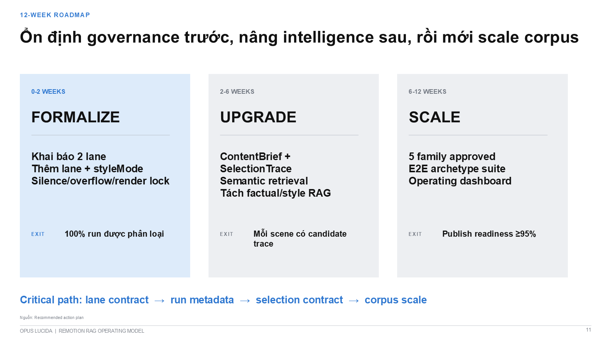

Production Lane
- Approved topic, facts và script
- Visual treatment + user gate
- Ingest factual và visual evidence
- TTS + TimedScript
- RAG mapping + map gate
- Audio render + timed captions
- QA + final gate + handoff
Executive decision
`FLOW_V1` S0-S6, audio thật, ba user gates, provenance và publish handoff.
ContentBrief, visual RAG, selection trace, still QA; mặc định non-publishable.
Pilot chỉ sang production khi đủ approved script, facts, TimedScript và QA record.
Action register
Lane contract trước; run metadata và hard gates sau; selection intelligence tiếp theo; corpus scale cuối.
| ID | Action / deliverable | Accountable owner | Deadline | Dependency | Success metric |
|---|---|---|---|---|---|
| P0-01 | Declare hai lane trong canonical workflowBoundary, purpose, entrypoint, output status và promotion rule. | Workflow owner Decision needed | D+2 | Named lane owners | Không còn entrypoint mơ hồ |
| P0-02 | Add `lane`, `styleMode`, approval stateBắt buộc trong run metadata và artifact manifest. | Pipeline owner Ready | D+5 | P0-01 | 100% new runs classified |
| P0-03 | Split `auto` và `locked` style selectionLocked mode ghi who + why; auto mode không nhận family ngầm. | Mapping owner Ready | D+7 | P0-02 | Auto runs không inherit terminal |
| P0-04 | Ship hard QA gatesSilence, overflow, provenance, one-active-render lock. | QA owner Ready | D+10 | Run metadata | Silent output bị block |
| P1-01 | Introduce ContentBrief + SelectionTraceIntent, audience, beat, actors, candidates, reason, fallback. | Mapping owner Planned | Week 4 | P0-03 | Mỗi scene có candidate trace |
| P1-02 | Separate factual and visual RAGHai evidence namespace, hai QA policy, một production manifest. | RAG corpus owner Planned | Week 5 | Contract versioning | 100% facts + visuals trace riêng |
| P1-03 | Add semantic rank + anti-monotonyIntent fit, evidence quality, availability và repetition penalty. | RAG + Mapping Planned | Week 6 | P1-01, P1-02 | Layout repeat ≤2 |
| P2-01 | Promote five visual familiesEditorial, dashboard, data, product và cinematic. | RAG corpus owner Planned | Week 10 | Rights review capacity | 5 approved usable families |
| P2-02 | Build E2E archetype suite + dashboardPilot, production, promotion and failure-path fixtures. | QA owner Planned | Week 12 | Stable contracts | Publish readiness ≥95% |
Assign bốn accountable owners và approve promotion gate contract.
DUE: D+2Target operating model
12-week action roadmap
Evidence register
